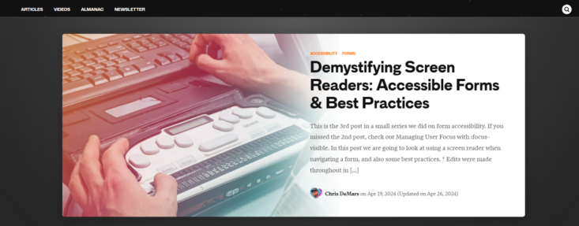

presented by Kozlouski Konstantin from 353 group
How to open developers console in Mozilla Firefox and Safari?
In order to open the developer console on Mozilla Firefox, you need to use the universal shortcut - Ctrl + Shift + L (or Cmd +Shift + J on Mac) You can also open it from the action menu - by cklicking on the action menu then web developer then browser console. To do it on Safari, you need to open it and click on the Preferences tab. Then ckick on the Advanced tab and check the box associated with Show Develop menu in the menu bar. You’ve made the Console visible, you can open it by accessing the Develop tab at the top and cklicking on Show Error Console.
Absolute or relative links?
I prefer absolute links when referencing resources across domains or when maintaining a fixed URL structure is crucial. They ensure consistency and reliability, particularly for SEO and social sharing purposes. On the other hand, relative links are advantageous for simplifying maintenance, adapting to changes in website structure, and providing clear navigation within the same domain. The choice between absolute and relative links depends on factors such as website complexity, portability, and ease of maintenance.
What is the difference between JPG, GIF and PNG formats?
The differences between PNG and JPEG lie primarily in their compression methods and resulting advantages and disadvantages. JPEG's lossy compression efficiently reduces file sizes, making it popular for photographs, but this compression leads to a loss of image quality with each save. In contrast, PNG offers lossless compression, preserving image quality even after multiple saves, which is advantageous for text, line art, and images with large color blocks. Additionally, PNG supports superior transparency options compared to GIF, enabling smooth transitions and gradual transparency effects. Each format has its strengths and is chosen based on the specific requirements of the image being saved.
What is WEBP image type? What is SVG?
WebP, created by Google, serves as an alternative to traditional image formats like JPEG, PNG, and GIF. Its purpose is to provide improved compression and quality while maintaining versatility across various web applications and platforms.
SVG (Scalable Vector Graphics), a format suitable for the web, differs from pixel-based images like JPEGs as it stores images using mathematical equations rather than individual pixels. This means that instead of defining each pixel's color, SVG files contain instructions for drawing shapes using points and lines on a grid.
